Бумага одного художника это не та бумага, свойственная другому. Прошу заметить, речь идет не о фактуре, бренде, плотности или цвете. Если вглядеться в кадр из кинофильма с участием Веры Холодной, можно сказать обывательским языком (языком университетской номенклатуры) жанровая специфика, свойственная тому времени, мелодраматически-ноктюрническая салонная резвость… Но ничего это ни о кадре, ни о фильме, ни о чем не говорит путаная навигация или… говоря точнее, трудности перевода одной географической карты на другую, иноразмерную, что, соответственно, заводит не совсем туда. Теперь поглядим иначе, достаточно кадра.. героиня, запыхавшись, растерянно-собранно, изнеможденно облокотилась пепельной головой о дерево. Ее вернувшийся после взгляда через плечо профиль отражает исчерпывающе всю специфику белого цвета как такового и не только, то есть его оксюморон и антиномичность, позитивную парадоксальность по ту сторону законов чистого разума, логики, рацио, логоса и т. д., т. е. чисто фонарно-патриархальных гаечных ключей. Ошибочно полагать, как это делал и Аристотель, и феноменологи, что цвет это акциденция, он всегда на чем-то, а как такового его нет, или, точнее, нечто может быть во что-то окрашено. Скорее верно так цвет - это уже что-то, неразрывная, тонкая, субстанциальная категория вне захвата, посему она и ускользает, и правильно делает. Белый это бумага, будь она например пожелтевшей она сочится, изнурительно жаждет ласки, пылает неустанной любовию
[ 18 сентября 2026 ]
KAPTИHЫ
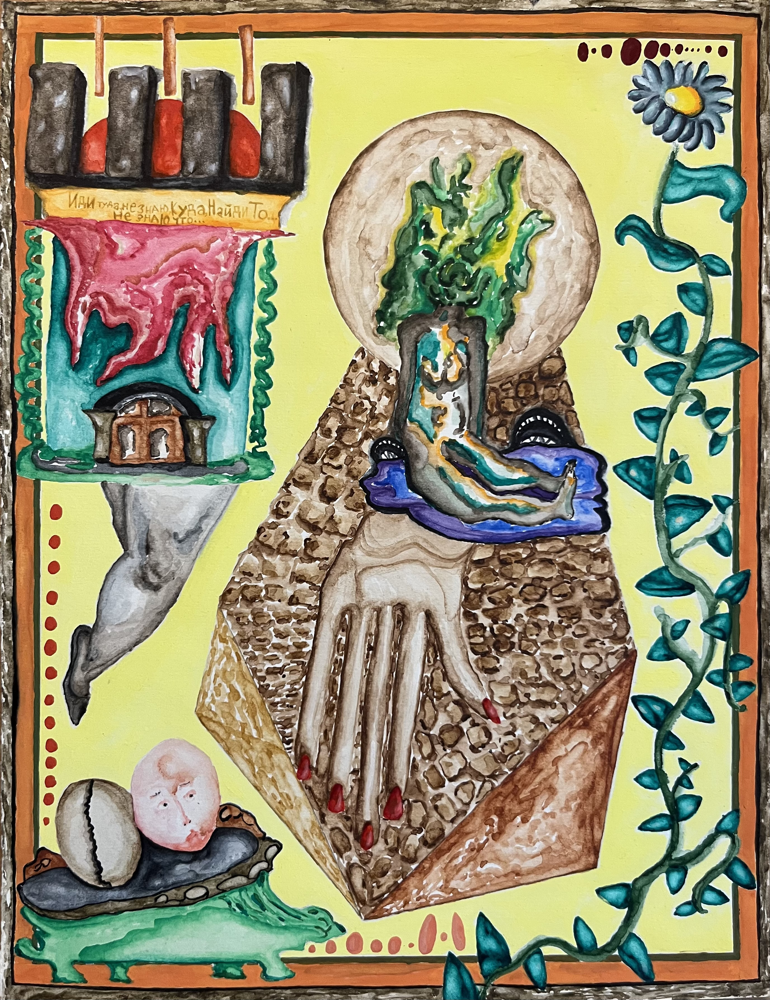
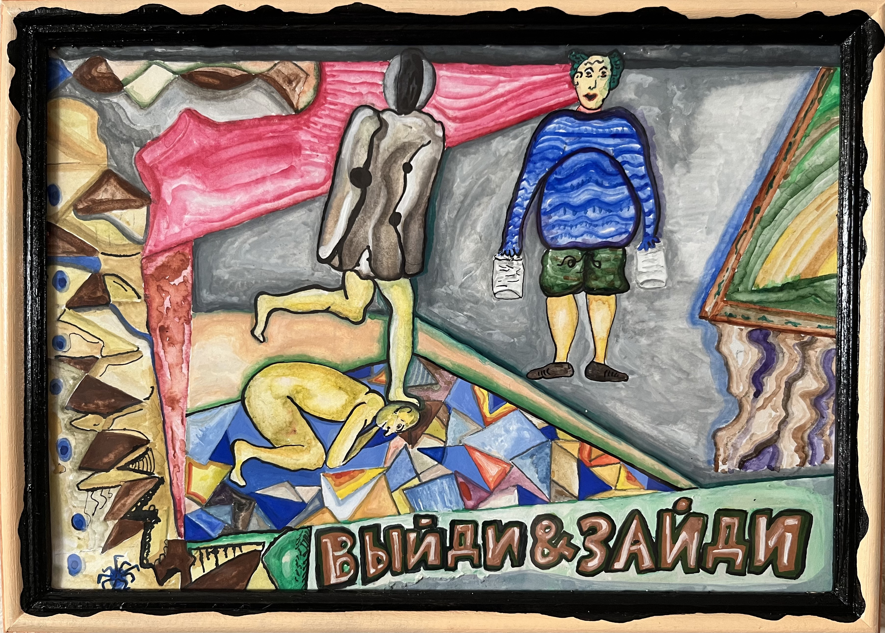
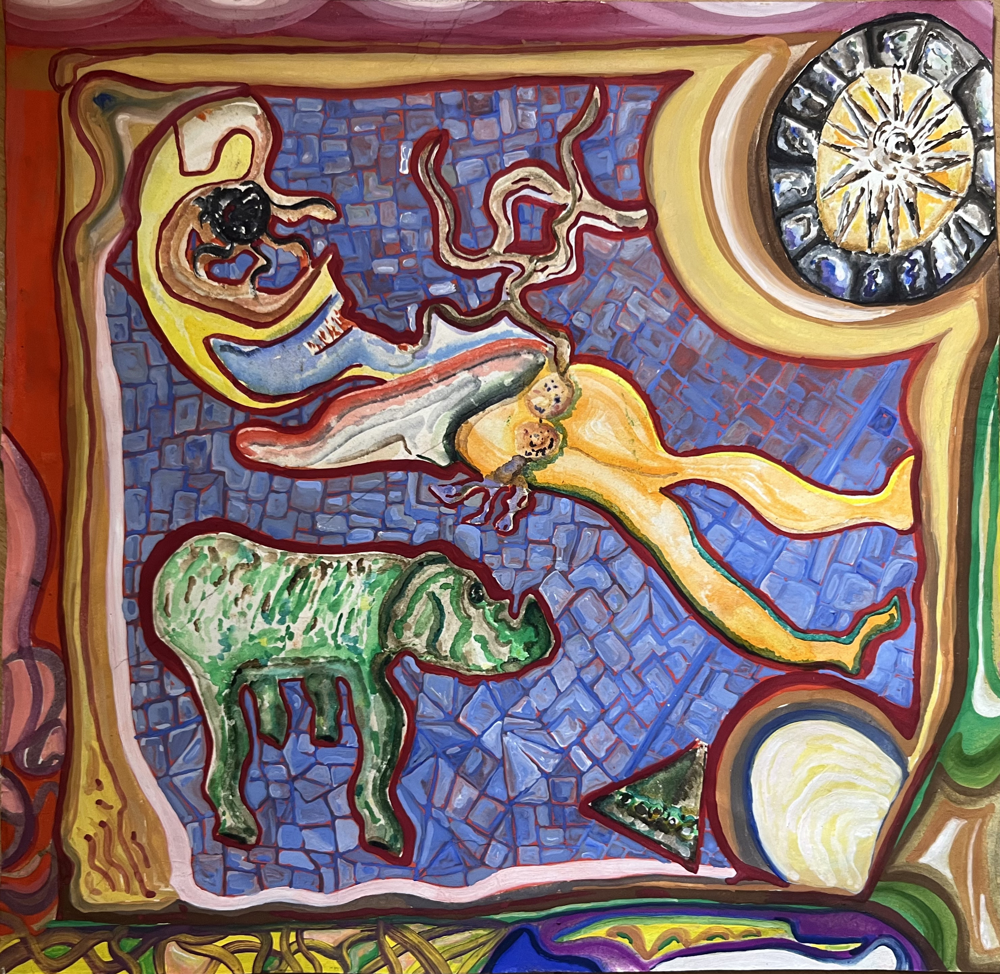
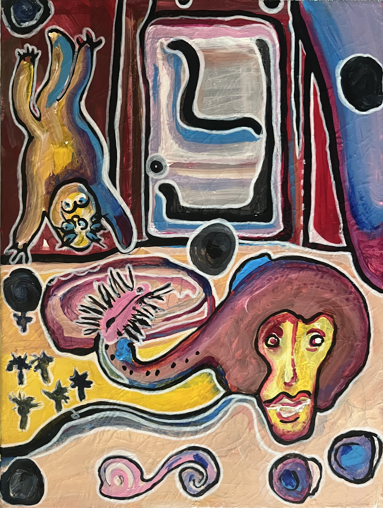
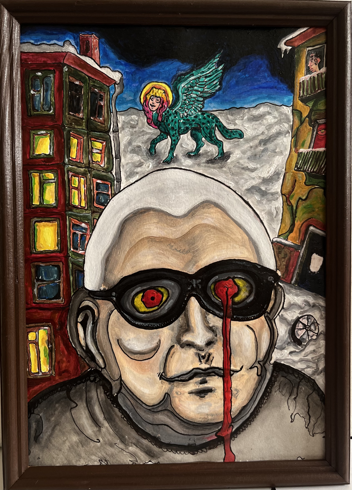
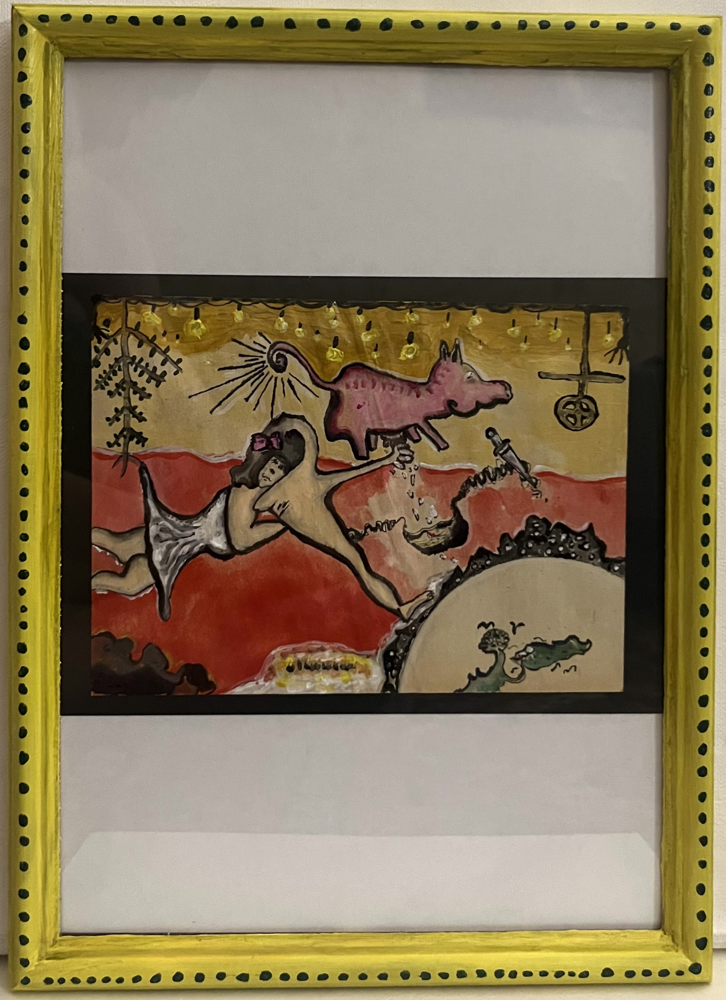
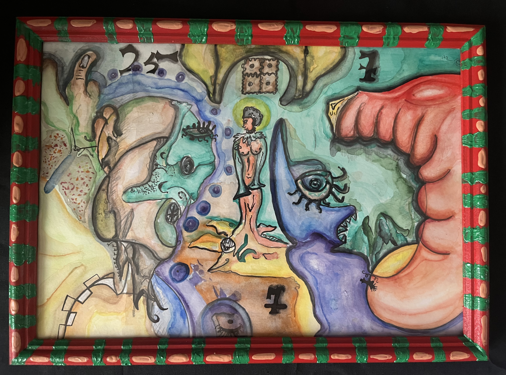
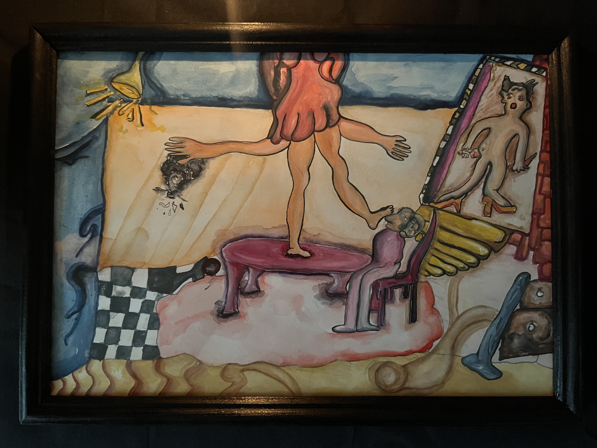
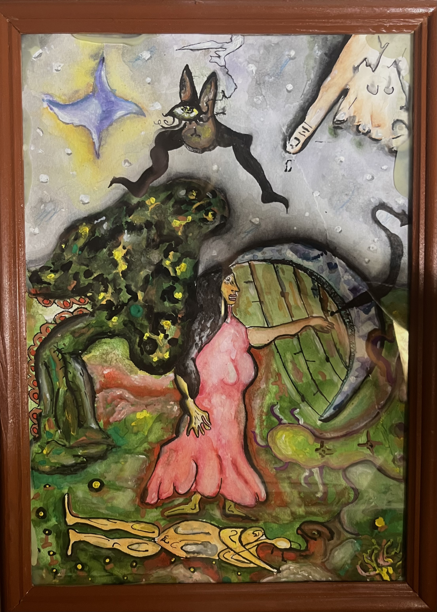
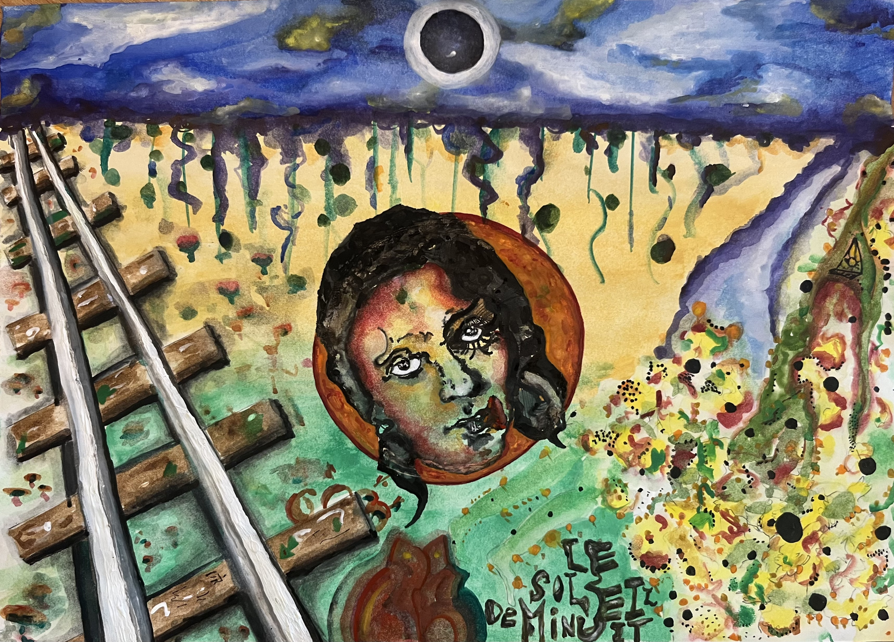
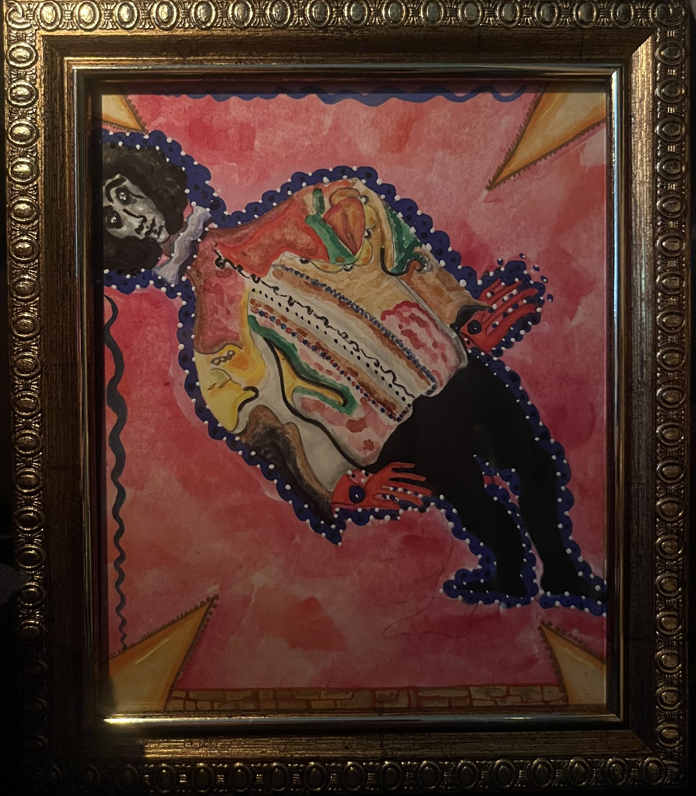